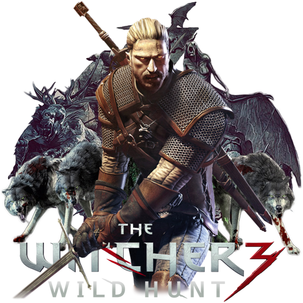

< THE WITCHER 3 : Wild Hunt >
개발사 : CD 프로젝트 RED
출시일 : 2015년 5월 18일
플랫폼 : XBOX ONE, PS4, PC
엔진 : REDengine 3
장르 : 3인칭 액션 RPG
*
'더 위쳐 3: 와일드 헌트'는 폴란드 작가 사프코스키의
동명의 원작 소설을 기반으로 개발된 RPG '더 위쳐' 시리즈의 세 번째 작품이다.
레드 엔진 3를 기반으로 개발된 '더 위쳐 3: 와일드 헌트'는 전작보다 30배 이상의 크기를 가진 오픈월드 맵을 지원하며
각 지역마다 고유의 스토리 라인을 배정하고 플레이어의 선택에 따라 시나리오에 영향을 미치는 등 스토리 전개에 유연성을 더했다.
플레이어는 기억을 되찾은 리비아의 게롤트를 조작하여 와일드 헌트를 쫓기 위한 모험을 펼치게 된다

플레이어의 선택에 따라 다양한 길을 제시하는 '위쳐' 시리즈의 특징은 '오픈월드'를 만나 더욱 크게 부각됐다.
단순히 갈 수 있는 지역이 넓어졌다는 개념을 넘어서서 기존보다 더 방대하고, 다양한 가능성이 잠재되어 있는 새로운 세계를 열었기 때문이다.
즉, '위쳐' 시리즈와 오픈월드의 만남은 성공적이었다고 말할 수 있다.
'위쳐 3'는 오픈월드를 기반으로 한 만큼 이동에 큰 제약이 없다.
주인공 '게롤트'의 눈앞에 펼쳐진 지역 중 그가 방문하지 못하는 곳은 없다.
실제로 시연에서도 깎아지르는 벼랑을 기어올라 퀘스트에 필요한 물품을 획득하는 모습을 확인할 수 있었다.
이러한 제약은 단순히 '이동'에 국한되지 않는다.
'게롤트'가 아직 당도하지 못한 장소에는 숨겨진 비밀과 이야기가 다수 숨어 있다.
나만의 탐험 경로를 발굴해, 미지의 지역에 숨어있는 비밀을 캐낼 수 있다는 것이 '위쳐 3'의 주요 플레이 요소 중 하나다.